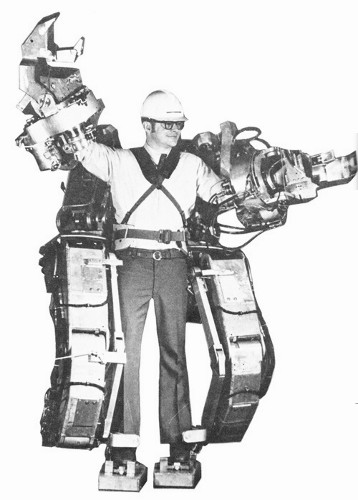

Powered Exoskeleton
History

The Beginning
The ambition to build a human muscle intensifying machine has tested the minds of scientists and engineers alike for over one hundred years; first modeled by Nicholas Yagin in 1890. Yagin's invention "was intended to augment the running abilities of the
Russian Army" (Herr, 2009). Yagin concluded that he could amplify the muscles of the army in order to create a form of super soldier. Despite the intended design, no such device was ever successfully built.
The First Machine
In the mid-1960's, nearly seventy years later, Bonsor and Kiger (2014) indicate that Cornell University engineer, Neil Mizen, managed to develop a thirty-five pound, wearable frame exoskeleton; awkward and not fully functional. In the meantime, General
Electric established plans for an eighteen-foot-tall device they called the "pedipulator" that would carry its operator around in it (Bonsor and Kiger, 2014). Although the concept of the "pedipulator was good, its design would have made it difficult
for the operator to move around for such a large device would take up a massive amount of space and the operator would have to account for that when moving. This decade marked the race to develop a fully functioning exoskeleton, as many companies
and militaries were interested by the features of such a technology. Unfortunately, the makers of the exoskeleton were limited by the underdeveloped technology of their age; computers were slow and an efficient energy source was not yet known.
At the beginning of the 21st century,
Military Interest
The Defense Advanced Research Project Agency (DARPA), began funding for the exoskeleton program which in phase one, included the contractors: "Sarcos Research Corporation, University of California, Berkeley, and the Oak Ridge National Laboratory"
(Bellis, 2014). By the final phase of the program, only Sarcos Research Corporation remained. The corporation now focuses on the development of a "fast-moving, heavily-armored, high-power lower and upper body system" for DARPA (Bellis, 2014).
Sarcos Research Corporation is currently in the process of creating their second generation powered exoskeleton for the US Army, which they call the Raytheon XOS 2. Intended for military use, the full body suit will increase a soldier's strength,
agility and endurance capabilities. "The XOS 2 uses high-pressure hydraulics to allow the wearer to lift heavy objects at a ratio of 17:1. This allows repeated lifting of the load without exhaustion or injury" (Raytheon XOS 2, 2014). The
second generation suit is composed of a lighter material and as twice as efficient as its predecessor, the XOS 1 (Raytheon XOS 2, 2014). The features of this new exoskeleton will include the ability to: carry up to 200 lbs. at a time with
ease, punch through 3 inches of wood, and resist environmental challenges. Unfortunately, this new, updated exoskeleton is still primitive to what humans imagined a muscle augmenting suit would be like. The Raytheon XOS 2 still has a slow reaction
time that would be counterproductive when trying to be stealthy or quick (Biello, 2013). One wall engineers have yet to breech is how to connect the exoskeleton up to the human mind. With this feature, the powered exoskeleton will evolve to a
completely new machine.
References